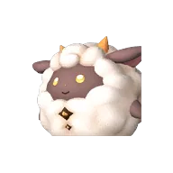
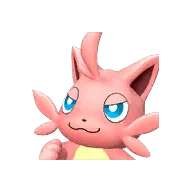

Палпедия
Палы
Боссы
Пассивки
Разведение
Карта
Найти или спросить
Ctrl K
Башня · Отряд браконьеров Рейн
Зои и Гриззболт
Обычный
Сложный
HP
12 900
Уровень
10
Стихия
Молния
Слабость
Земля
Кем бить
Анубис

Ламболл

Каттива
Тактика
Держись за своим палом — Гриззболт бьёт вперёд.
Кувырок от больших атак, следи за таймером.
Средней кнопкой мыши приказывай атаковать.
Главная
Палы
Поиск
Мои
Ещё